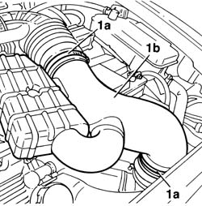
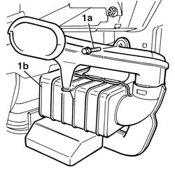

1048A28 vacuum air circuit resonator pipe - r+r
- Path
- Procedures > 10 ENGINE > 1048 ENGINE AIR SUPPLY CIRCUIT > 1048A vacuum air circuit > 1048A28 vacuum air circuit resonator pipe - r+r
- Kind
- repair procedure (removal / refitting; the operation number is the code)
- Applies to
- engines: 1.6 TS , 1.8 TS, 2.5 V6, 3.2 V6; all production periods
- Interactive page
- https://sloeber94.github.io/elrnDB-a156/en/#/3237528
Applies to: engines: 2.5 V6, 3.2 V6; all production periods
 Removing
Removing
 Refitting
Refitting1. Loosen the bands (1a) and remove the vacuum air circuit resonator (1b).

Applies to: engines: 2.5 V6, 3.2 V6; all production periods
Refitting
RemovingPlace the vacuum air circuit resonator back in position and fix it using the bands.
Applies to: engines: 1.6 TS , 1.8 TS; all production periods
Removing
Refitting7055B54 under-engine guard - r r
1. Unscrew fastening screw (1a) and remove the resonator device (1b) from the car.

Applies to: engines: 1.6 TS , 1.8 TS; all production periods
Refitting
RemovingReassemble the resonator device onto the car with the fastening screw
Topics linked from this page (2)
Topics that link to this page (10)
- 1004B12 power unit with manual gearbox - r+r for versions with a/c
- 1004B24 power unit with manual gearbox with hydraulic selection - r r
- 1020D38 flywheel side oil seal - replace
- 1024B10 engine flywheel - r + r for versions with manual gearbox
- 1048A10 air cleaner filtering element - replace
- 1810A20 clutch - r + r
- 1820B47 rigid pipe from master cylinder (pump) to vibration damper - r r for right hand drive versions
- 1820B51 rigid input pipe to vibration damper - r r for rhd versions
- 2110A10 manual gearbox and differential - r + r
- 3340B53 rigid pipe (one) from master cylinder (pump) to abs hydraulic control unit - r r for rhd versions